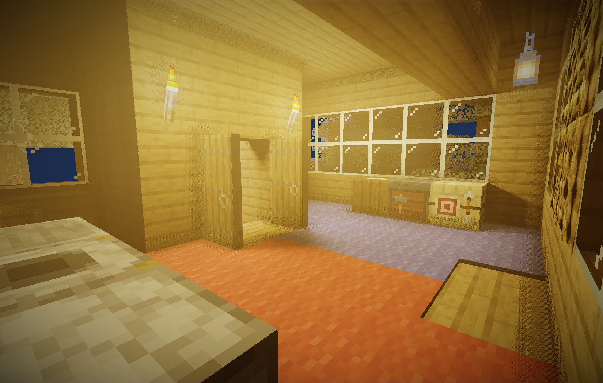
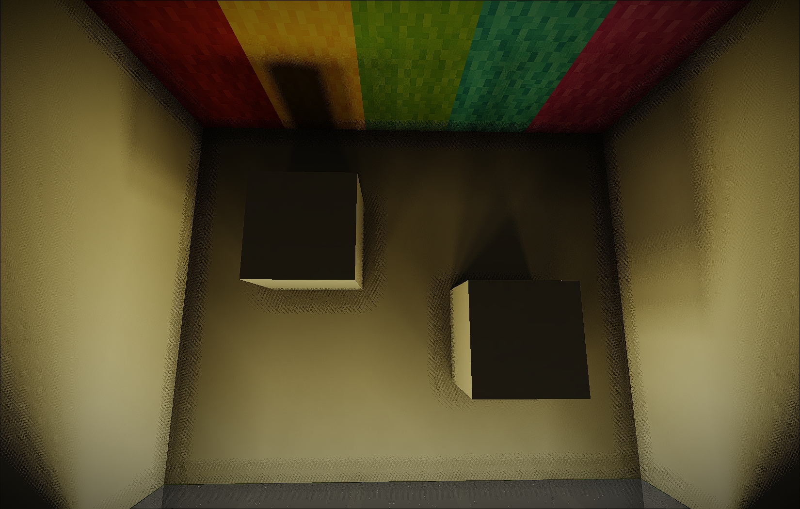
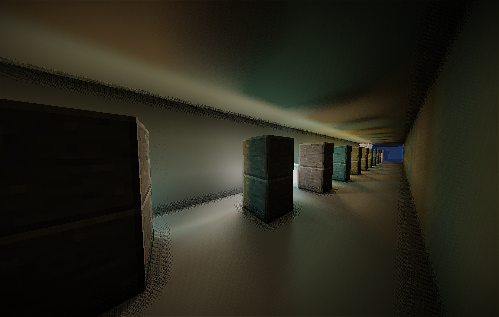
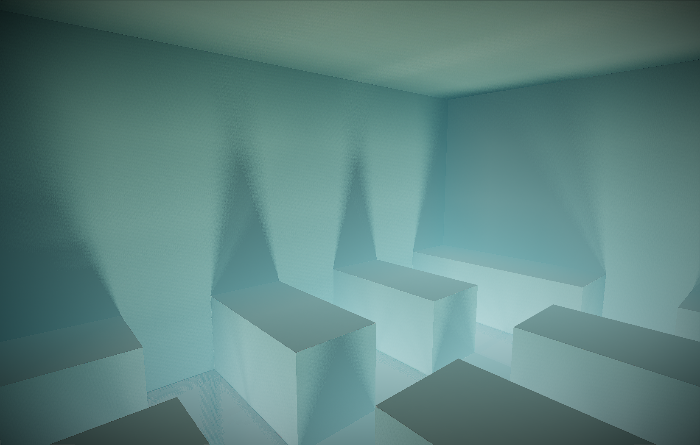
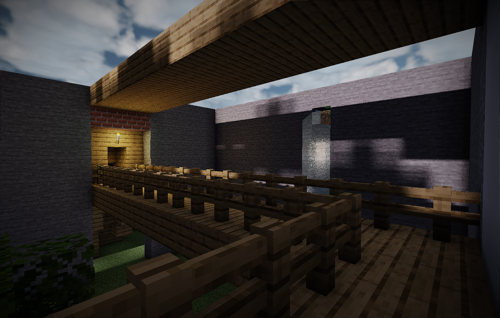
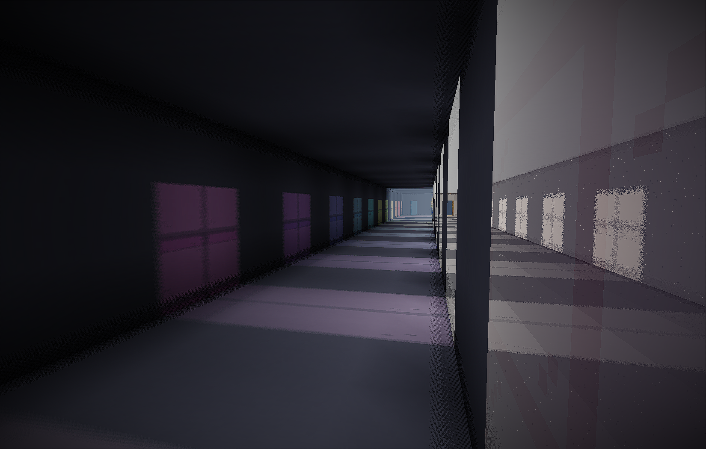

The Newest Native Ray Traced Voxel Engine
for Minecraft macOS.
Powered by Apple Metal. Built for graphics enthusiasts and developers demanding pure performance.
Powered by Apple Metal. Built for graphics enthusiasts and developers demanding pure performance.
Screenshots captured directly on macOS.






* All screenshots were captured on a base M1 MacBook Air at 1050p (Ultra Settings), running at an average of 5-10 FPS.
Advanced rendering architecture designed seamlessly for Apple Silicon.
Real-time, flawless access to a 3D Voxel Grid stored directly on the GPU. Powered by heavily optimized DDA ray marching with comprehensive reflection and lighting fixes.
Run native resolutions seamlessly. Prisma enforces Cascaded Spatial upscaling using Apple MetalFX and AMD EASU, coupled with contrast-adaptive Laplacian Sharpening.
Every light source casts physically accurate shadows. Leveraging procedural Vogel disk sampling, penumbra shadows scale flawlessly up to 32 rays per light.
PrismaShaderAPI offers an elegant hook for third-party modders. Register custom MSL passes, inject custom uniforms, and control the underlying Metal pipeline.
Using the brand new PrismaShaderAPI, developers can inject custom Metal Shading Language (MSL) passes, bind custom uniforms, and interact directly with the hardware Voxel Grid. No more hacky GLSL translations.
Read the Documentation in our discord!#include <metal_stdlib>
using namespace metal;
// Implement PrismaShaderAPI in Java
PrismaShaderAPI.getInstance().registerCustomMetalPass(
new ResourceLocation("mymod", "custom_bloom"),
"mymod:shaders/bloom.metal"
);
// Native access in your MSL shader
kernel void custom_bloom(
device const uint2* voxelGrid [[buffer(0)]],
constant VoxelUniforms& u [[buffer(1)]]
) {
// Pure MSL execution
float3 shadow = traceDdaShadowRay(...);
}Ready to use. Drop it into your Fabric mods folder and experience native ray tracing on macOS.
Transparency Note: Prisma is highly demanding. On base models (like the M1 MacBook Air), performance is heavily impacted unless you set render resolution scaling to around 25%–45% with quality settings configured to Medium.
Upgraded the MetalFX Spatial upscaler to MetalFX Temporal using native engine motion vectors, completely eliminating path-tracing noise and stabilizing the image.
Replaced the old static Double AO with true Voxel Ray-Traced Ambient Occlusion. Features soft occlusion that properly passes through slabs, leaves, and tall grass.
Restored 1-bounce Global Illumination! Fully separated into its own UI toggle. It now perfectly interacts with MetalFX Temporal for noise-free colored bounces.
The raytracer now maps all 3D skin layers (Hat, Jacket, etc.) into the grid, and fully supports Slim (Alex) vs Classic (Steve) skin shadows and reflections.
Added Anamorphic Lens Flares, Chromatic Aberration, a soft Vignette, and boosted Bloom intensity by 130% for a dreamy cinematic feel.
Water and fluids are now correctly inserted into the 3D Voxel Grid, allowing them to cast volumetric shadows, reflect in mirrors, and block ambient light. Shallow water is clear, deep water fades to navy.
Quartz, Prismarine, and Sea Lanterns now feature beautiful frosted/glossy ray-traced reflections.
Luminance-only curve that preserves 100% of real RGB chromaticity. Eliminates the grey, washed-out veil while keeping lush green grass and rich golden sunsets.
Prisma automatically selects the best MetalFX render scale for your display on first launch: 0.40 for M4 Max native 3.4K, 0.50 for standard Retina, 0.75 for 1080p.
Pitch-black rooms no longer leak phantom Global Illumination from dark walls. Also inverted and correctly mapped motion vectors, fixing all edge smearing and ghosting.
Handled empty color attachment descriptors in Metal render passes, resolving a NoSuchElementException crash during GameRenderer.integrate3DHudDepth.
Eliminated white highlights and normal flipping along block edges/corners by weighting axis-snapped normals with camera view alignment and filtering fallback normals to front-facing geometry.
Isolated glass reflection detection strictly to internal block voxels, eliminating z-fighting and flickering on solid walls adjacent to or facing glass.
Volumetric atmospheric fog now halts cleanly at the water surface and is disabled underwater (fixing sea lantern scanlines), with significantly enhanced sun beam intensity through crevices and canopies.
Split deferred lighting into pre/post-translucent passes. Looking through stained glass and water now reveals full deferred sun/point light shadows and VXAO instead of vanilla lighting!
Restored and polished specular reflections for stained glass and water across the dual-pass pipeline.
Ground-up GPU ray march implementation with Henyey-Greenstein scattering, Beer-Lambert absorption, and configurable ray steps.
True atmospheric crepuscular beams cast from the sun and moon directly through open sky, canopies, and window frames.
Light beams traversing stained glass dynamically tint to the physical chromatic hue of each glass pane.
Reflection soft shadows are dynamically tied to the world shadow penumbra slider (0 = razor sharp, >0 = realistic soft penumbra).
Full raytraced DDA point light shadows inside reflections with colored stained glass penetration.
Removed blurry bilinear filtering from voxel reflections, restoring crisp, authentic Minecraft texture sampling.
Guarded deferred passes against uninitialized projection matrices during server login packets, preventing "Network Protocol Error" and screen freezes.
Bounded volumetric fog raymarch to the active voxel radius (56 blocks), eliminating harsh checkerboard/stippled noise on clouds and distant water.
Fixed reflection rays terminating on glass; rays now traverse transparent panes into the scenery beyond.
Softened torch fog to a subtle warm haze, properly tuned lanterns and sea lanterns, and aligned handheld lights with hands.
Player models now cast accurate, fully-rendered shadows in 3rd-person perspective.
Fully upgraded and ported the entire engine architecture to run on Minecraft 26.3.
Replaced legacy fragment shaders with pure Compute Shaders for exponentially faster dispatch.
Added a new physically-based volumetric fog halo around light sources computed analytically along the ray.
Forced cascaded mode (MFX + EASU) with unified Base Render and Intermediate Scale sliders.
Replaced old unsharp mask with a true contrast-adaptive reverse blur to combat MFX softness.
Removed arbitrary analytical light limits. All point lights now cast fully accurate physical shadows.
Giant 0-32 scalable ray slider now accurately governs both Sun and Point Light soft shadows.
Removed hacky vanilla lightmap blending that caused glowing surfaces near torches.
Fixed precision errors causing shadows to clip walls. Carpets no longer cast ground shadows.
Eliminated the neon green artifacting on transparent cross-blocks (grass/flowers) near water.
Cleaned up dead settings, removed broken SDAA anti-aliasing, and grouped Shadow Quality sliders.
Implemented procedural vogel disk sampling for soft shadows, drastically reducing noise.
Initial introduction of analytical shadow casting for point lights overriding block maps.
Massive backend rewrite for deferred and post-process passes natively in Metal Shading Language.
Resolved multiple strict compiler warnings, unused variables, and scope leaks in MSL.